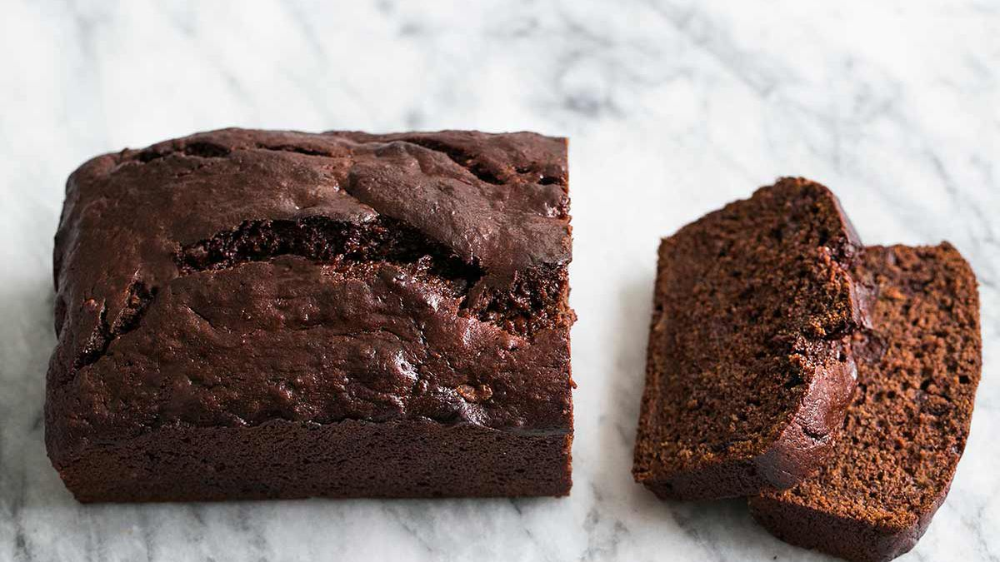

Chocolate Banana Bread

Description
This Chocolate Banana Bread has its own sweet twist with chocolate chips, cocoa, and just a hint of sour cream.
This adds a tang of extra sweetness that can satisfy your craving with just one bite. The time to prepare is quick and easy
and should only take around 10 minutes to complete. Once you have it in the oven, it should sit for another 1 hour after
preheating to 340 degrees F. It will be enough to for a group wanting just a simple snack or after-dinner dessert. After
baking it yields two 9x5 inch loaves of bread.
Ingredients
- 1 cup margarine, softened
- 2 cups sugar
- 4 eggs
- 6 bananas, mashed
- 2 teaspoons vanilla extract
- 3 cups all-purpose flour
- 2 teaspoons baking soda
- 1/4 cup unsweetened cocoa powder
- 1 cup lite sour cream
- 1 cup semisweet chocolate chips
Steps
- Preheat oven to 350 degrees F (175 degrees C). Lightly grease two 9x5 inch loaf pans.
- In a large bowlm cream together margarine, sugar and eggs. Stir in bananas and vanilla. Sift in flour, baking soda and
cocoa; mix well. Blend in sour cream and chocolate chips. Pour batter into prepared pans.
- Bake in preheated oven for 60 minutes, or until a toothpick inserted into center of a loaf comes out clean.